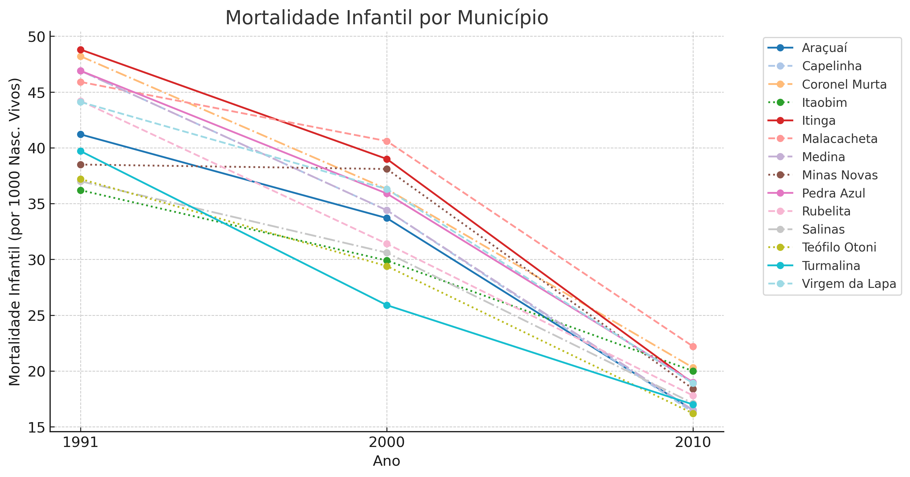
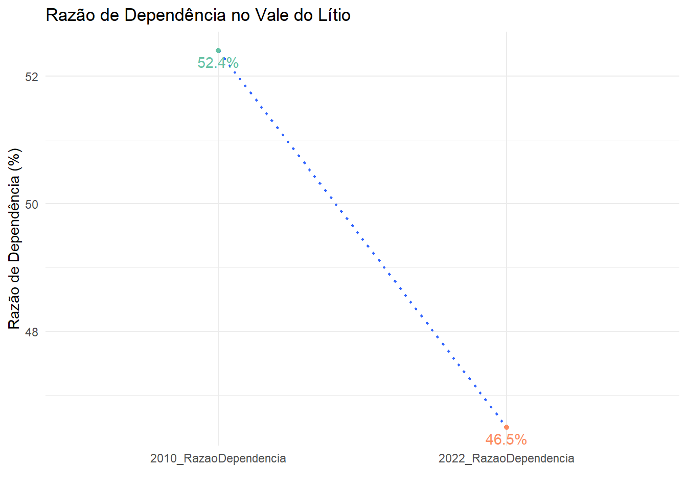

2 Fluxos Migratórios com dados censitários
[Em edição]
2.1 Quais os movimentos migratórios observados nos municípios do Vale do Lítio? É possível inferir sobre a última década sem os dados do Censo Demográfico de 2022?
A característica comum entre os municípios do Vale do Lítio é o nítido esvaziamento populacional que têm experimentado ao longo dos anos. A Tabela 1 revela que desde o início do século esse fenômeno tem sido evidente, com muitos municípios registrando taxas de crescimento negativas, enquanto os poucos que apresentaram aumento o fizeram a taxas muito baixas. No segundo decênio deste século, as previsões se confirmaram. Os resultados do Censo Demográfico de 2022 mostram que a maioria dos municípios da região apresentou decréscimos populacionais com taxas negativas bastante expressivas, como foi o caso de Rubelita (-2,6% ao ano), Minas Novas (-1,9% ao ano), Virgem da Lapa (-1,2% ao ano), entre outros. As maiores taxas positivas foram observadas nos municípios de Capelinha (1,1% ao ano) e Turmalina (0,9% ao ano). Os municípios com crescimento positivo provocaram um aumento total de população na região de 11.032 pessoas, enquanto aqueles com crescimento negativo contribuíram para uma diminuição total da população em 17.642 pessoas. Em 2022, em oito municípios, as populações totais não apenas diminuíram em relação a 2010, mas também em relação ao ano 2000.
| População residente e taxas de crescimento anual | |||||
| Municípios do Vale do Lítio - 2000, 2010 e 2022 | |||||
| Municípios | População 2000 | População 2010 | População 2022 | Taxa de Crescimento 2000/2010 (%) | Taxa de Crescimento 2010/2022 (%) |
|---|---|---|---|---|---|
| Grupo 1 | |||||
| Teófilo Otoni | 129424 | 134733 | 137418 | 0.40 | 0.16 |
| Grupo 2 | |||||
| Araçuaí | 35713 | 36041 | 34297 | 0.09 | -0.41 |
| Capelinha | 31231 | 34796 | 39626 | 1.09 | 1.09 |
| Salinas | 36720 | 39182 | 40178 | 0.65 | 0.21 |
| Grupo 3 | |||||
| Itaobim | 21271 | 21001 | 19151 | -0.13 | -0.77 |
| Malacacheta | 19250 | 18787 | 17516 | -0.24 | -0.58 |
| Medina | 21641 | 21037 | 20156 | -0.28 | -0.36 |
| Minas Novas | 30646 | 30803 | 24405 | 0.05 | -1.92 |
| Pedra Azul | 23608 | 23843 | 24410 | 0.10 | 0.20 |
| Turmalina | 15655 | 18046 | 20000 | 1.43 | 0.86 |
| Grupo 4 | |||||
| Coronel Murta | 9134 | 9117 | 8200 | -0.02 | -0.88 |
| Itinga | 13894 | 14407 | 13745 | 0.36 | -0.39 |
| Rubelita | 10199 | 7777 | 5679 | -2.67 | -2.59 |
| Virgem da Lapa | 13672 | 13625 | 11804 | -0.03 | -1.19 |
| Totais | |||||
| Vale do Lítio | 412058 | 423195 | 416585 | 0.27 | -0.13 |
| Minas Gerais | 17891494 | 19595309 | 20538718 | 0.91 | 0.39 |
Fonte: IBGE (2023). Censo Demográficos 2000-2010-2022. Elaboração: FJP/Diretoria de Estatística e Informações
Esses resultados estão diretamente relacionados ao fator migratório, que, por sua vez, está associado ao processo de desruralização da região (Tabela 2). O censo de 2022 deve confirmar o processo verificado em 2010, quando todos os municípios apresentaram taxas de crescimento urbano positivas e taxas de crescimento rural negativas. As únicas exceções, com taxas de crescimento urbano negativas, foram Itaobim (-0,2% ao ano) e Rubelita (-0,02% ao ano). Por outro lado, o único município com taxa de crescimento rural positiva foi Itaobim (0,05% ao ano). A tendência verificada em regiões desenvolvidas é que a participação da população rural deixa de exercer pressão sobre o setor urbano quando ela se estabiliza em torno de 15% da população total. Este é o caso do Estado de Minas Gerais, cujos saldos líquidos migratórios negativos, historicamente expressivos, passaram a ser praticamente nulos nos anos 2000 e 2010, quando a participação da população rural foi de, respectivamente, 18% e 15%.
Em 2010, os únicos municípios da região com baixa participação da população rural no total foram Pedra Azul (12%) e Teófilo Otoni (18%). Por outro lado, em quatro municípios, as participações das populações rurais eram iguais ou superiores a 50%: Rubelita (68%), Minas Novas (59%), Itinga (55%) e Virgem da Lapa (50%). Não por coincidência, esses municípios foram os que apresentaram as maiores taxas de crescimento negativas entre 2010 e 2022. Os dados de 2010 indicavam que esses municípios entraram no período de 2010 a 2022 com estoques bastante expressivos de população rural. Mesmo que as taxas de crescimento da população urbana tenham sido consideráveis, elas não foram e não são suficientes para absorver os fluxos migratórios no sentido rural/urbano. Tanto é verdade que as taxas de crescimento total dos municípios, como já mencionado, não refletem o tamanho desses fluxos, sendo muito baixas ou negativas. Isso sugere que os setores urbanos desses municípios não são capazes de absorver a pressão rural e acabam servindo apenas como uma etapa no processo migratório uma vez iniciado.

Fonte: IBGE (2023). Censo Demográficos 2000-2010. Elaboração: FJP/Diretoria de Estatística e Informações
Em 2010, todos os municípios do microterritório apresentaram saldos líquidos migratórios negativos, ou seja, mais pessoas saíram desses municípios do que entraram. O somatório desses saldos negativos representou um contingente de -53,9 mil pessoas na região, um número maior do que a população de cada um de seus municípios, com exceção de Teófilo Otoni. Todos os municípios apresentaram saldos líquidos migratórios negativos tanto em relação aos outros municípios do estado, fora das Regiões Geográficas Intermediárias (RGInt) a que pertencem , quanto em relação aos municípios de fora do estado (com exceção de Itaobim, que possui um saldo positivo interestadual de 38 migrantes). Os municípios do Vale do Lítio, que estão na RGInt de Teófilo Otoni, possuem saldos positivos em relação aos municípios do próprio Vale do Lítio, principalmente devido ao saldo positivo do município de Teófilo Otoni, que exerce uma grande atração sobre os outros municípios da região. No entanto, essa atração não se sustenta, uma vez que o município atua como expulsor de população, com um saldo líquido migratório de -3,6 mil pessoas para os municípios de outras regiões de Minas Gerais, bem como para os de outros estados. Essa dinâmica se repete em todos os outros municípios com saldos positivos em relação à RGInt de Teófilo Otoni (Araçuaí, Capelinha, Turmalina e Virgem da Lapa). No caso da RGInt de Montes Claros, Rubelita apresentou saldos negativos em relação aos outros municípios dessa região, enquanto Salinas registrou saldos positivos. Em ambos os casos, os saldos líquidos migratórios negativos são expressivos, principalmente em relação aos municípios de outros estados. Conclui-se que todos os municípios do Vale do Lítio que atraem migrantes das próprias RGInt desempenham um papel de etapa migratória, pois recebem correntes migratórias de municípios que estão expulsando população de forma acentuada.
Municípios do Vale do Lítio: Movimentos Migratórios em relação à data de referência de 31/07/2005 - Total e Saldo
| Municipio | Total | Total Imigrantes de MG | Imigrantes da RGINT | Imigrantes Outros Municipios de MG | Imigrantes do Resto do Brasil |
|---|---|---|---|---|---|
| Grupo 1 | |||||
| Teófilo Otoni | 7107 | 5266 | 3461 | 1805 | 1841 |
| Grupo 2 | |||||
| Araçuaí | 1312 | 897 | 546 | 351 | 415 |
| Capelinha | 2340 | 2013 | 1188 | 825 | 327 |
| Salinas | 2252 | 1728 | 1243 | 485 | 524 |
| Grupo 3 | |||||
| Itaobim | 1079 | 647 | 409 | 238 | 432 |
| Malacacheta | 744 | 368 | 268 | 100 | 376 |
| Medina | 796 | 523 | 226 | 297 | 273 |
| Minas Novas | 765 | 572 | 433 | 139 | 193 |
| Pedra Azul | 540 | 354 | 181 | 173 | 186 |
| Turmalina | 1076 | 851 | 563 | 288 | 225 |
| Grupo 4 | |||||
| Coronel Murta | 265 | 210 | 67 | 143 | 55 |
| Itinga | 522 | 307 | 206 | 101 | 215 |
| Rubelita | 235 | 147 | 92 | 55 | 88 |
| Virgem da Lapa | 668 | 412 | 252 | 160 | 256 |
| Totais | |||||
| Vale do Lítio | 58868 | 39881 | 24034 | 15847 | 18987 |
| Minas Gerais | 1326235 | 944419 | NA | NA | 381816 |
| Imigrantes: pessoas moravam nos municípios selecionados e que, na data de referência não moravam | |||||
Fonte: IBGE (2023). Censo Demográficos 2000-2010. Elaboração: FJP/Diretoria de Estatística e Informações
Emigrantes
| Municipio | Total | Total Emigrantes de MG | Emigrantes da RGINT | Emigrantes Outros Municipios de MG | Emigrantes do Resto do Brasil |
|---|---|---|---|---|---|
| Grupo 1 | |||||
| Teófilo Otoni | 10688 | 6368 | 1953 | 4415 | 4320 |
| Grupo 2 | |||||
| Araçuaí | 2866 | 1348 | 417 | 931 | 1518 |
| Capelinha | 3561 | 2853 | 651 | 2202 | 708 |
| Salinas | 4322 | 2150 | 768 | 1382 | 2172 |
| Grupo 3 | |||||
| Itaobim | 1642 | 1248 | 599 | 649 | 394 |
| Malacacheta | 2882 | 1767 | 503 | 1264 | 1115 |
| Medina | 2495 | 1364 | 387 | 977 | 1131 |
| Minas Novas | 4049 | 1644 | 776 | 868 | 2405 |
| Pedra Azul | 2755 | 2020 | 461 | 1559 | 735 |
| Turmalina | 1171 | 839 | 357 | 482 | 332 |
| Grupo 4 | |||||
| Coronel Murta | 929 | 586 | 151 | 435 | 343 |
| Itinga | 1332 | 680 | 206 | 474 | 652 |
| Rubelita | 952 | 698 | 638 | 60 | 254 |
| Virgem da Lapa | 1299 | 480 | 212 | 268 | 819 |
| Totais | |||||
| Vale do Lítio | 112740 | 72157 | 24034 | 48123 | 40583 |
| Minas Gerais | 1328658 | 944419 | NA | NA | 384239 |
| Emigrantes: pessoas que moram em outros municípios e que, na data de referência, moravam nos municípios selecionados | |||||
Fonte: IBGE (2023). Censo Demográficos 2000-2010. Elaboração: FJP/Diretoria de Estatística e Informações
Saldo Migratório
| Municipio | Total | Saldo Total de MG | Saldo Migratório da RGINT | Saldo Migratório Outros Municipios de MG | Saldo Migratório do Resto do Brasil |
|---|---|---|---|---|---|
| Grupo 1 | |||||
| Teófilo Otoni | -3581 | -1102 | 1508 | -2610 | -2479 |
| Grupo 2 | |||||
| Araçuaí | -1554 | -451 | 129 | -580 | -1103 |
| Capelinha | -1221 | -840 | 537 | -1377 | -381 |
| Salinas | -2070 | -422 | 475 | -897 | -1648 |
| Grupo 3 | |||||
| Itaobim | -563 | -601 | -190 | -411 | 38 |
| Malacacheta | -2138 | -1399 | -235 | -1164 | -739 |
| Medina | -1699 | -841 | -161 | -680 | -858 |
| Minas Novas | -3284 | -1072 | -343 | -729 | -2212 |
| Pedra Azul | -2215 | -1666 | -280 | -1386 | -549 |
| Turmalina | -95 | 12 | 206 | -194 | -107 |
| Grupo 4 | |||||
| Coronel Murta | -664 | -376 | -84 | -292 | -288 |
| Itinga | -810 | -373 | 0 | -373 | -437 |
| Rubelita | -717 | -551 | -546 | -5 | -166 |
| Virgem da Lapa | -631 | -68 | 40 | -108 | -563 |
| Totais | |||||
| Vale do Lítio | -53872 | -32276 | 1056 | -32276 | -21596 |
| Minas Gerais | -2423 | NA | NA | -2423 | NA |
| Emigrantes: pessoas que moram em outros municípios e que, na data de referência, moravam nos municípios selecionados | |||||
Fonte: IBGE (2023). Censo Demográficos 2000-2010. Elaboração: FJP/Diretoria de Estatística e Informações
Como demonstrado na figura anterior, os resultados do Censo Demográfico de 2022 sugerem que todos os processos migratórios observados para o ano de 2010 foram potencializados, resultando no generalizado esvaziamento populacional já mencionado. Evidentemente, todos esses processos resultam em uma reestruturação interna, principalmente no que diz respeito à estrutura etária da população, o que terá implicações em diversos aspectos socioeconômicos e, consequentemente, na redefinição de políticas públicas.

Fonte: PNUD (2020). Elaboração: FJP/Diretoria de Estatística e Informações
Todo o processo migratório afeta diversos aspectos da dinâmica demográfica. Por exemplo, a menor participação da população rural e o processo de urbanização são alguns dos aspectos que explicam a acentuada queda na taxa de fecundidade (?fig-fecundidade) . Em 2010, o conjunto de municípios do Vale do Lítio estava com um nível de fecundidade exatamente igual ao nível de reposição (2,1 filhos por mulher em idade reprodutiva), indicando que apenas o número necessário para substituir o casal estava sendo alcançado.

Fonte: PNUD (2020). Elaboração: FJP/Diretoria de Estatística e Informações
A figura ?fig-mrt_infantil apresenta mortalidade infantil no Vale do Lítio, embora em 2010 ainda estivesse em níveis acima da média do estado, apresentou quedas bastante expressivas em relação aos níveis em que se encontravam em 2000. Capelinha e Minas Novas são os municípios da região com os maiores níveis de fecundidade, com 2,4 filhos por mulher em idade reprodutiva, enquanto Salinas e Virgem da Lapa são os municípios com os níveis mais baixos (1,7 filhos). Em 2010, o município de Malacacheta apresentou o maior nível de mortalidade infantil, com 22,2 mortes de crianças de até 1 ano de vida para cada 1000 nascidas vivas, enquanto Teófilo Otoni registrou o menor nível, com 16,2 mortes de crianças para cada 1000 nascidas vivas. Esse padrão de comportamento dos indicadores demográficos está diretamente relacionado ao processo de urbanização desses municípios, em detrimento da população rural.

Fonte: PNUD (2020). Elaboração: FJP/Diretoria de Estatística e Informações
A queda nas taxas de fecundidade é um dos principais fatores responsáveis pelo envelhecimento da população. Os resultados do censo de 2022 indicam que esse processo de redução na fecundidade (?fig-esp_vida) deve ter se acentuado bastante na última década. Pela Tabela 5, observa-se que, para cada 100 crianças, o número de pessoas com mais de 65 anos representava 34 em 2010 e subiu para 67 em 2022. Este índice atinge um máximo de 102 idosos para 100 crianças no município de Rubelita e um mínimo de 42 idosos em Capelinha, sendo este o único município com um índice inferior a 50 em 2022.

O grafico indica ainda que, no Vale do Lítio, a proporção da população com 65 anos ou mais aumentou de 8,8% em 2010 para 12,7% em 2022, enquanto a parcela da população entre 0 e 14 anos diminuiu de 25,6% para 19,0% no mesmo período. Esse cenário teve um impacto direto na razão de dependência, que declinou de 52,4% para 46,5% ao longo desses anos. Em 2022, o município com a maior proporção de crianças de 0 a 14 anos foi Capelinha, com 21,0%, e o município com a menor proporção foi Rubelita, com 17,2%. Quanto às pessoas com 65 anos ou mais, a maior proporção foi observada em Rubelita, com 17,5%, e a menor em Capelinha, com 8,7%. Esses mesmos municípios apresentam a menor e a maior razão de dependência, respectivamente: Capelinha com 42,3% e Rubelita com 53,2%.
Fonte: PNUD (2020).
| Municípios | 2010 | 2022 | ||||||||
|---|---|---|---|---|---|---|---|---|---|---|
| 0 a 14 | 15 a 64 | 65+ | Razão de Dependência | Índice de Envelhecimento | 0 a 14 | 15 a 64 | 65+ | Razão de Dependência | Índice de Envelhecimento | |
| Araçuaí | 25.4 | 65.0 | 9.5 | 53.7 | 37.4 | 18.7 | 68.3 | 13.0 | 46.4 | 69.1 |
| Capelinha | 29.2 | 65.0 | 5.8 | 53.9 | 19.9 | 21.0 | 70.3 | 8.7 | 42.3 | 41.4 |
| Coronel Murta | 25.1 | 65.0 | 10.0 | 53.9 | 39.8 | 18.5 | 67.0 | 14.5 | 49.3 | 78.8 |
| Itaobim | 26.2 | 63.9 | 9.9 | 56.5 | 37.9 | 18.7 | 67.1 | 14.2 | 49.1 | 75.8 |
| Itinga | 28.3 | 61.8 | 9.9 | 61.9 | 35.1 | 19.2 | 66.9 | 14.0 | 49.5 | 73.0 |
| Malacacheta | 27.2 | 63.3 | 9.6 | 58.1 | 35.2 | 19.0 | 67.2 | 13.9 | 48.9 | 73.0 |
| Medina | 26.5 | 63.2 | 10.3 | 58.2 | 38.7 | 19.7 | 65.5 | 14.8 | 52.7 | 74.8 |
| Minas Novas | 29.3 | 64.8 | 5.9 | 54.3 | 20.3 | 19.6 | 69.4 | 11.0 | 44.2 | 56.3 |
| Pedra Azul | 27.7 | 63.7 | 8.6 | 57.1 | 31.0 | 19.9 | 67.8 | 12.3 | 47.6 | 61.8 |
| Rubelita | 27.2 | 62.7 | 10.1 | 59.5 | 37.2 | 17.2 | 65.3 | 17.5 | 53.2 | 101.9 |
| Salinas | 23.3 | 66.9 | 9.7 | 49.4 | 41.8 | 18.1 | 67.7 | 14.2 | 47.7 | 78.4 |
| Teófilo Otoni | 23.5 | 67.4 | 9.1 | 48.3 | 38.7 | 18.7 | 68.6 | 12.7 | 45.8 | 68.0 |
| Turmalina | 25.9 | 67.2 | 6.9 | 48.9 | 26.8 | 19.2 | 70.2 | 10.6 | 42.5 | 55.5 |
| Virgem da Lapa | 23.9 | 66.5 | 9.6 | 50.4 | 40.2 | 17.3 | 68.0 | 14.7 | 47.1 | 84.9 |
| Vale do Lítio | 25.6 | 65.6 | 8.8 | 52.4 | 34.3 | 19.0 | 68.3 | 12.7 | 46.5 | 66.7 |
| Minas Gerais | 22.4 | 69.4 | 8.1 | 44.0 | 36.3 | 18.1 | 69.6 | 12.4 | 43.7 | 68.6 |
2.1.1 Conclusão
A compreensão da dinâmica demográfica de qualquer região envolve a análise dos processos relacionados aos nascimentos, mortes e migração. O Vale do Lítio é uma região onde todos esses processos estão em curso e são determinados pela realidade socioeconômica local. Como evidenciado, é uma região que enfrenta um claro processo de esvaziamento populacional, com seus municípios experimentando decréscimos populacionais ou crescendo a taxas muito baixas na última década. O Censo de 2022 confirma a tendência observada nos censos anteriores, que apontaram quedas acentuadas nas taxas de fecundidade e crescentes saldos líquidos migratórios negativos. A fecundidade é um componente que dificilmente contribuirá novamente para o crescimento da região, uma vez que suas taxas estão diretamente relacionadas ao intenso processo de urbanização e tendem a se estabilizar em níveis baixos, como observado em outras regiões. Portanto, o crescimento demográfico da região depende cada vez mais do componente migratório, que está diretamente relacionado aos fatores de expulsão atuantes na região, bem como aos fatores de atração oferecidos por outras regiões, dada a realidade local.